空洞騎士重現 - IDLE Scene
在經歷了超棒的絲綢之歌ヽ(✿ﾟ▽ﾟ)ノ後，是時候繼續我們的學習之旅了~~~ 第一次重現就先忽略腳色操作，單純重現空洞騎士的精髓 - 那無與倫比的美術層次，即便在沒有操作的情況下，整個場景依舊栩栩如生，除了腳色/環境的動畫外，那多層次的堆疊所達成的景深或許才是關鍵呢，此次重現就讓我們試圖捕捉其皮毛吧 > <。
重現場景
這是取自新手村 - 德特茅斯 (Dirtmouth) 中右側的畫面，在這短短兩秒鐘的畫面中涵蓋了許多關鍵技術: 美術、構圖、動畫、光影、視覺強化，本文主要專注在後四者，美術的部分如同一開始提過會借用社群提供的 sprites:
- 德特茅斯場景 - 大部分會用到的前景背景的 sprite 都是取自這邊，但有些找不太到有從其他資料夾挖圖使用。
- 小騎士 IDLE 動畫 - 這裡有好心人士分割區來的小騎士靜態身體抖動的 sprites，部分畫面有紅框框，可以參考上一篇的方式去除。
構圖
本來想說只要開個 2D unity project 然後把 sprite 放到對應的位置就好，但沒想到空洞騎士的構圖其實不是 2D 的!!! 這部分也出現在絲綢之歌，本質上空洞騎士依舊是 2D 遊戲，只是採用 3D 鏡頭 (perspective camera) 與 z 軸來控制圖層，這應該有許多考量，像是 parallex scrolling - 離鏡頭越遠移動越慢、多圖層堆疊也比較方便，下圖就是本次重現採用的圖層堆疊:
大概分成 5 個階層 - 底色、遠景、後方裝飾、腳色與地板、前景，細節上為了控制哪層在前面還會微調 z 軸數值，另外不曉得是不是 unity perspective 的 bug，有時候物件是離鏡頭較遠卻會蓋過前面的物件，這時得用 sorting layer order 來處理，整體 render 出來的效果如下:
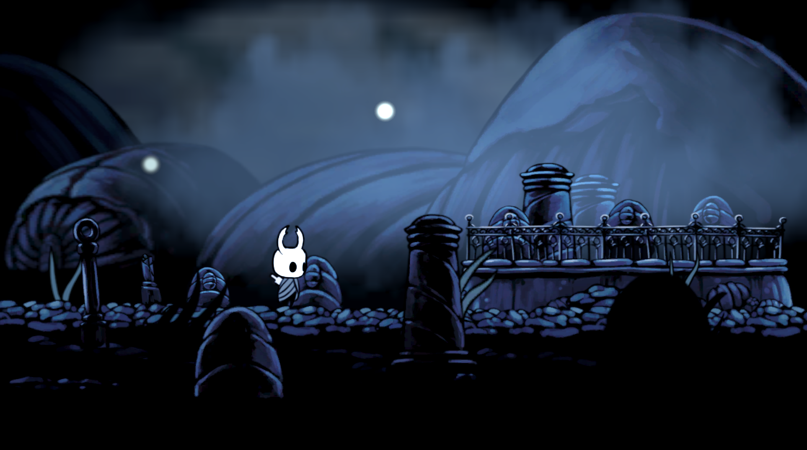感覺有個 50 分了XD，不過看上去會覺得不夠鮮明，遠景跟腳色的對比性不夠，這點會透過光影、視覺強化處理，實際排版才發現了整個裝飾只要用到幾個物件重複排列就完成了，其中最令我 shock 的是，地板只用到兩種 (下圖左二，右三用來繪製地底紋路) 搭配水平翻轉就能延伸出整片地板，銜接有瑕疵就用前景物件擋一下。
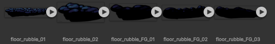動畫
空洞騎士在動畫細節上完全不馬虎，不僅小騎士與雜草會動，連空氣中的落葉、光圈、甚至是雲霧本身都有，底下分兩種來介紹:
物體動畫
用在小騎士與草等物件的 unity 動畫，新增 animator 跟 animation 並將分割好的連續 sprites 拖移到 animation 視窗，然後調整好時間區間就完成了。
物件移動
可以看到背景中的光點與雲霧其實會隨時間往右飄動，把時間拉長點看，這些物件是會隨機生成並消失了，明暗還會變動，但這次就單純重現飄動就好，首先替光點與雲霧新增 rigidbody 2D 的 component:
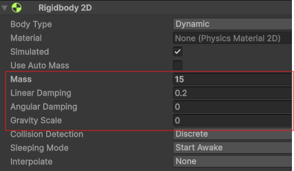用於控制物件的物理性質 (ex: 速度)，配置上因為物件都是漂在空中，將 Gravity 關閉以便控制，其他屬性就還好，在這裡用不太到，接著新增 script - wind:
using Unity.VisualScripting;
using UnityEngine;
public class wind : MonoBehaviour
{
Rigidbody2D RB;
Vector2 F_Wind = new(10f, -1f);
[SerializeField] float MAXSPEED = 5f;
// Start is called once before the first execution of Update after the MonoBehaviour is created
void Start()
{
RB = transform.GetComponent();
}
void FixedUpdate()
{
RB.AddForce(F_Wind, ForceMode2D.Impulse);
RB.linearVelocity = Vector3.ClampMagnitude(RB.linearVelocity, MAXSPEED);
}
}
先透過 AddForce with Impluse 來讓物件立刻加速朝右下角移動並限制終端速度，這段程式達成的效果跟直接設定 linearVelocity 是差不多的，這種寫法的好處是彈性高一點，會考慮到物體的重量等等，之後複雜的運動才會派上用場，至於整體動畫的的效果如下:
光影
在這個場景中，除了預設的 global light 以外，仔細看會發現小騎士本身也會發光，這個設計可以增添探索的感覺，尤其在那種黑漆漆的地方 (沒拿提燈的水晶山峰)，為了達成這種效果先將 global light 調低，然後新增額外光源 (spot light 2D)，位置固定在小騎士的頭部，不過小騎士的光芒不應該照到前面的裝飾品與地板內部，所以得透過 target sorting layer 來排除:
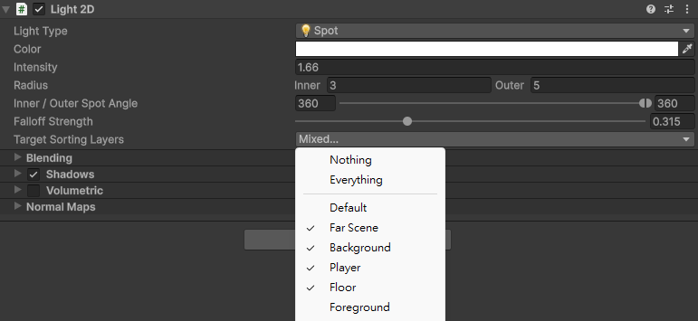如上圖所示，先新增一些 sorting layer 然後替每個物件設定對應的 sorting layer，注意這會影響 render 的圖層，最後在 spot light 選項中排除 foreground layer。此外，我還新增另一個 global light 來控制超遠背景的亮度，整體的效果如下:
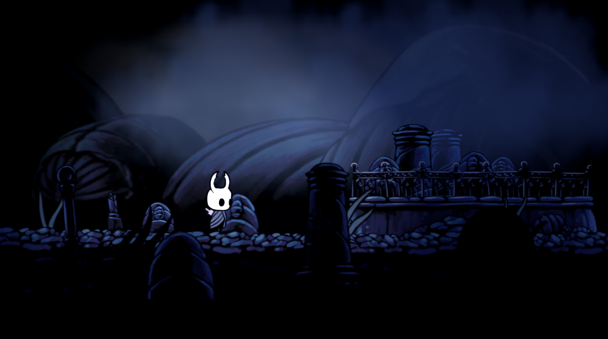套上多種光源後感覺好多了，應該有個 60 分，但背景的那種朦朧感還是沒出來，需要一些額外處理來凸顯畫面的層次感。
視覺強化
觀察遊戲內的畫面會覺得背景本身的色調與清晰度都跟前景有落差，最後這一步我們要透過 unity 的 post-processing 來達成背景的模糊以及色調調整:
Volume
- 開啟 post-processing - 選取 Camera 並確認 Rendering 欄位底下的 post-processing 是有勾選的。
- 新增 volume - 新增 Volume > Global Volume，profile 可以用預設的，volume 底下有很多內建好的屬性能讓我們快速的調整畫面，這裡會使用 Depth Of Field, Color Curves, Color Adjustments。 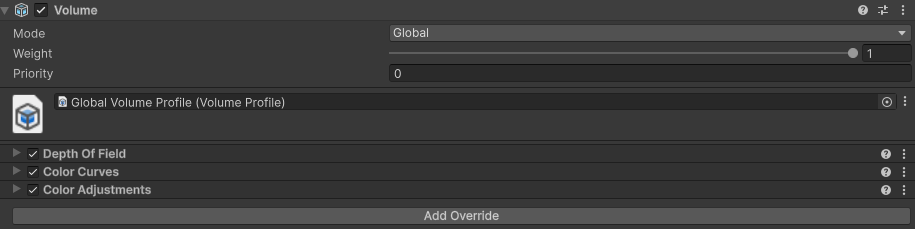
- Depth Of Field - 這是屬於 3D 的功能，根據與鏡頭的距離來調整模糊比例，由於我們的鏡頭是 perspective 所以可以享受此功能!! 設定採用 Bokeh - 指的是那種前景清楚、背景模糊的拍攝技巧，然後只需要調整 Focal length，越大就越模糊。 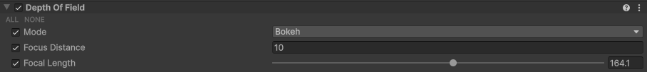
- Color Curves - 控制 RGB 等色彩模型的元素強度，因為背景的藍色色調比較強，稍微針對藍色調整，記得先啟動 override，然後對 curve 點右鍵 Add Key 就可以拖移 curves 了，x 軸可以視為本來的藍色強度，y 軸就是強化後的。 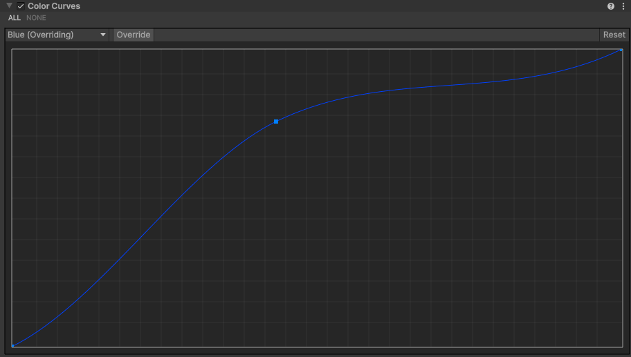
- Color Adjustments - 主要用來強化 contrast，讓色調變亮使前後景差異更大。 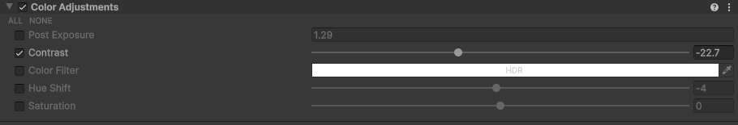
套用特定圖層
你們調整時應該就會發現，volume 套用的範圍是整個鏡頭，但我們想要的只有背景被調整才對，要做到這點得花點工夫:
- 雙鏡頭 - volume 套用的範圍是以 camera 當單位，所以想只套用一部分需要產生兩個 camera，先將本來的鏡頭複製一份，一個做為前景鏡頭 (不套 volume)、一個做為背景鏡頭 (套用 volume)。
- 分離畫面 - culling mask 屬性能控制鏡頭要考慮的 layer (非 sorting layer)，將要套用 volume 的 layer 都加到背景鏡頭的 mask 裡，其餘的設定到前景鏡頭，要注意光源必須兩邊都有，不然畫面會一片黑。 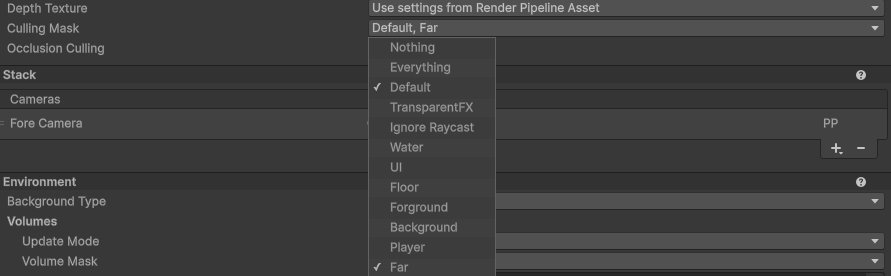
- 綁定 volume - 指定 volume 以及 volume 所設定的 layer 給背景鏡頭，然後前景鏡頭不需要就設成 Nothing。 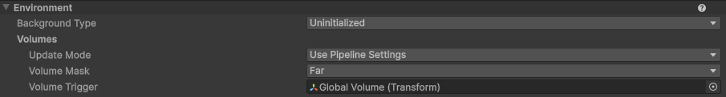
- 疊加模式 - 目前兩個鏡頭的畫面只會顯示其中一個，需要將前景鏡頭的 render type 改成 overlay: 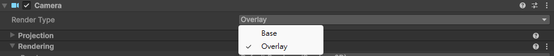 然後在背景鏡頭的 stack 指定前景鏡頭 (Fore Camera) 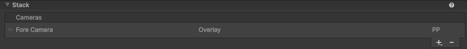
搞了這麼多的效果就是下面這樣，總覺得還是差強人意，雖然現在透過 post-processing 讓背景與前景比較分離，但就是有點太單調，果然 team cherry 的美術造詣還是太高了XD，目前我只能抄到一點皮毛。
總結
經歷了這篇教學，實際操作了圖層、動畫、光影、跟 post processing，最終的達成了 70 分的成品，這讓我理解到美學是要需要鍛鍊的，尤其本文使用的圖檔還皆為 team cherry 所繪製，因此路還很遙遠呢~~~ 剩下的得靠自己琢磨了，畫面呈現的部分就先暫時告一段落，下一篇介紹腳色基礎操作。